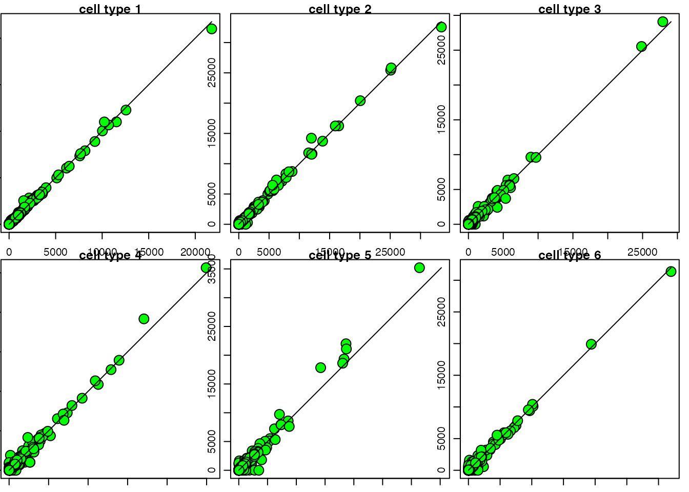
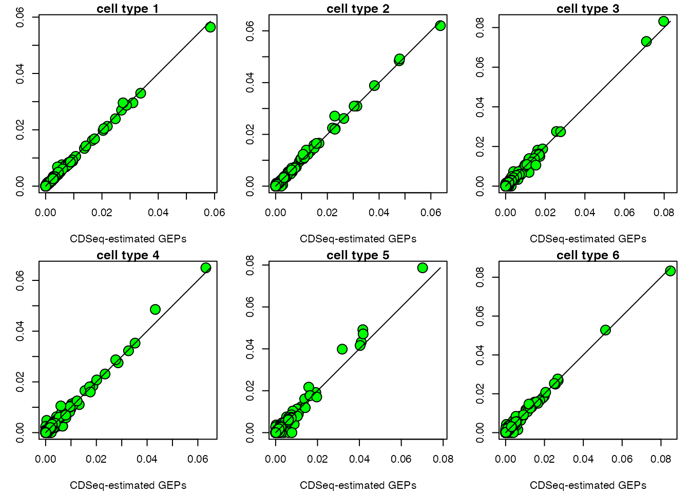
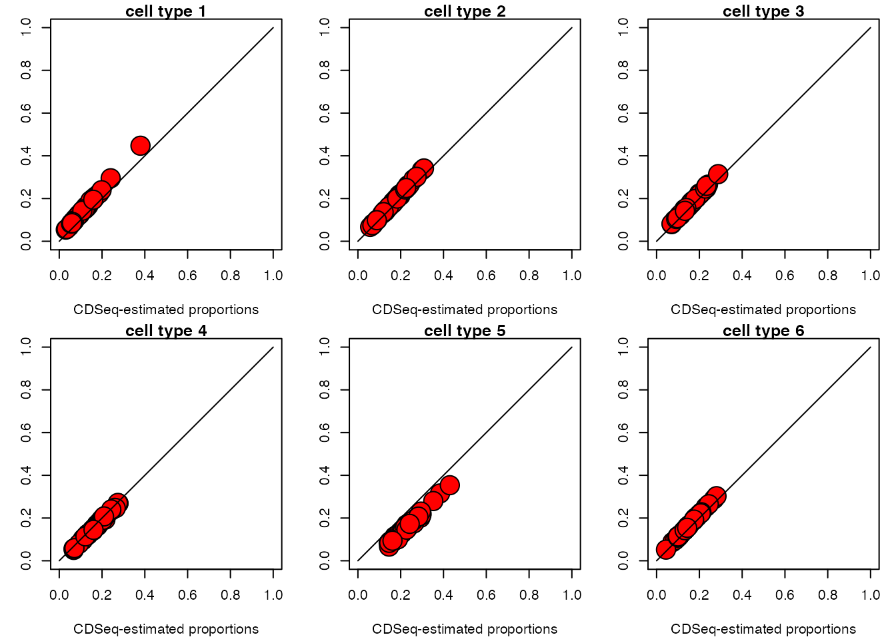
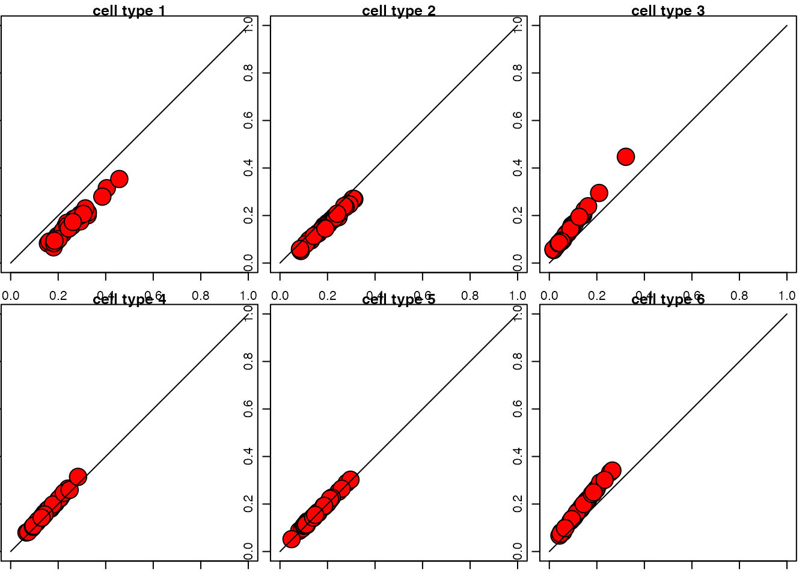

CDSeq: a complete deconvolution method using sequencing data
CDSeq-vignette.RmdIntroduction
CDSeq is a complete deconvolution method using sequencing data. Simply put, CDSeq takes bulk RNA-Seq read counts data as input and estimates the cell-type-specific gene expression profiles (csGEPs) and sample-specific cell-type proportions (SSP) simultaneously.
Quick start
The minimum inputs for CDSeq are: bulk RNAseq read counts, number of cell types in the mixtures (a scalar or a vector), number of Markov chain Monte Carlo (MCMC) iterations. Set cpu_number = 1 to avoid using more cpus in this simple example.
result<-CDSeq(bulk_data = mixtureGEP,
cell_type_number = 6,
mcmc_iterations = 1000,
cpu_number=1)Check out the details about input and output in the following.
Usage
Input
| Input | Description |
|---|---|
| bulk_data | this is the bulk RNAseq read counts data. It is a G \(\times\) M matrix or data frame, where G is the number of genes and M is the sample size. |
| beta | hyperparameter for csGEP estimation. |
| alpha | hyperparameter for SSP estimation. |
| cell_type_number | number of cell types. It is an integer or a vector of varying integers. |
| mcmc_iterations | number of iterations for Gibbs sampler. |
| dilution_factor | dilution factor is a number used to dilute the input bulk data for faster computation. CDSeq will dilute the bulk data by dilution_factor, i.e. \(\frac{\text{bulk_data}}{\text{dilution_factor}}\) will be analyzed. |
| gene_subset_size | number of genes used for a block (used in Reduce-Recover mode). |
| block_number | number of blocks (used in Reduce-Recover mode). |
| cpu_number | number of CPUs will be used. If null, CDSeq will detect the number of available cores for parallel computing. Default is NULL. |
| gene_length | effective length of the genes in bulk data. It is defined as gene length - read length + 1. |
| reference_gep | pure cell line gene expressions. |
| print_progress_msg_to_file | indicator of printing the running process. |
Ouput
| Output | Description |
|---|---|
| estGEP | CDSeq-estimated cell-type-specific gene expression profiles. It is a G by T matrix where G denotes the number of genes and M is the sample size. |
| estProp | CDSeq-estimated sample-specific cell-type proportions. It is a M by T matrix where M is the sample size and T is the number of cell types. |
| cell_type_assignment | If refGEP is given, CDSeq will perform one-to-one cell types assignment for CDSeq-estimated cell types. |
| lgpst | This is the log posterior values for each element in cell_type_number. |
| estT | CDSeq-estimated number of cell types. |
| est_all | If cell_type_number is a vector, CDSeq will return all estimations for all elements in cell_type_vector. |
| parameters | The user-provided parameters for CDSeq. |
| gibbsRunningTime | Time consumed for Gibbs sampler. |
| processIDs | Process ID in the operating system for running CDSeq. |
Installation
You could install CDSeq from Github by running the following
install_github("kkang7/CDSeq_R_Package")Examples
When the number of cell types is a scalar
The following code runs CDSeq using synthetic mixtures comes with the R package. The mixtureGEP consists of 40 samples with 500 genes. These in silico mixtures are generated using six pure cell lines and random generated mixing proportions. CDSeq takes mixtureGEP as input and outputs the estimates of cell-type-specific gene expressions and sample-specific cell-type proportions. When refGEP is provided, CDSeq will assign the identities of those estimated cell types by comparing the GEP of estimated cell types with the GEP of refGEP. If refGEP is not provided, the estimated cell types will remain anonymous. The other way to annotate CDSeq-estimated cell types is to use single cell RNAseq data.
result1<-CDSeq(bulk_data = mixtureGEP,
cell_type_number = 6,
mcmc_iterations = 2000,
gene_length = as.vector(gene_length),
reference_gep = refGEP, # gene expression profile of pure cell lines
cpu_number = 1)The output result1 is a list containing multiple entities as listed in Output. When cell_type_number is a scalar, CDSeq will only return the following values.
ls(result1)
#> [1] "cell_type_assignment" "cellTypeAssignSplit" "estGEP"
#> [4] "estProp" "gibbsRunningTime" "parameters"
#> [7] "processIDs"We can compare the CDSeq-estimated cell-type-specific GEPs with the ground truth.
trueGEP <- true_GEP_rpkm[,result1$cell_type_assignment]
par(mar=c(4,4,1,1), mfrow=c(2,3),mai = c(.1, .01, 0.1, 0.1), mar=c(4,3,1,1), pty="s")
for (i in 1:6) {
max_v <- max(c(result1$estGEP[,i], trueGEP[,i]))
plot(result1$estGEP[,i],
trueGEP[,i],
xlab = "CDSeq-estimated GEPs",
ylab = "True GEPs",
pch = 21,
bg = 'green',
cex=2,
xlim = c(0, max_v),
ylim = c(0,max_v),
main = paste0("cell type ",i))
lines(c(0,max_v),c(0,max_v), type = "l")
}
We then compare the CDSeq-estimated cell type proportions with group truth.
trueProp <- true_prop_cell[result1$cell_type_assignment,]
par(mar=c(4,4,1,1), mfrow=c(2,3),mai = c(.1, .01, 0.1, 0.1), mar=c(4,3,1,1), pty="s")
for (i in 1:6) {
plot(result1$estProp[i,],
trueProp[i,],
pch = 21,
cex = 3,
bg='red',
xlab = "CDSeq-estimated proportions",
ylab = "True proportions",
xlim = c(0,1),
ylim = c(0,1),
main = paste0("cell type ",i))
lines(c(0,1),c(0,1), type = "l")
}
For this dataset and given parameter settings, CDSeq took this much amount of time to finish:
result1$gibbsRunningTime
#> user system elapsed
#> 2292.907 2.416 2295.437When the number of cell types is a vector
The cell_type_number can also be a vector which contains different integer values. CDSeq will perform estimation for each integer in the vector and estimate the number of cell types in the mixtures. For example, one can set cell_type_number = 2:10 as follows, and CDSeq will estimate the most likely number of cell types from 2 to 10.
result2<-CDSeq(bulk_data = mixtureGEP,
cell_type_number = 2:10,
mcmc_iterations = 2000,
dilution_factor = 1,
block_number = 1,
gene_length = as.vector(gene_length),
reference_gep = refGEP, # gene expression profile of pure cell lines
cpu_number = 9, # use multiple cores to save time. Set the cpu_number = length(cell_type_number) if there is enough cores.
print_progress_msg_to_file = 0)CDSeq will automatically estimate the number of cell types from the cell_type_number vector (2:10 in our example) and return the corresponding estimate in estGEP and estProp and it will keep all the estimations for the different values in cell_type_number in est_all. Check out output for details.
trueGEP <- true_GEP_gene[,result2$cell_type_assignment]
par(mar=c(4,4,1,1), mfrow=c(2,3),mai = c(.1, .01, 0.1, 0.1), mar=c(4,3,1,1), pty="s")
for (i in 1:6) {
max_v <- max(c(result2$estGEP[,i], trueGEP[,i]))
plot(result2$estGEP[,i],
trueGEP[,i],
xlab = "CDSeq-estimated GEPs",
ylab = "True GEPs",
pch = 21,
bg = 'green',
cex=2,
xlim = c(0, max_v),
ylim = c(0,max_v),
main = paste0("cell type ",i))
lines(c(0,max_v),c(0,max_v), type = "l")
}
Similarly, we can compare the CDSeq-estimated cell type proportions with ground truth.
trueProp <- true_prop_cell[result2$cell_type_assignment,]
par(mar=c(4,4,1,1), mfrow=c(2,3),mai = c(.1, .01, 0.1, 0.1), mar=c(4,3,1,1), pty="s")
for (i in 1:6) {
plot(result2$estProp[i,],
trueProp[i,],
pch = 21,
cex = 3,
bg='red',
xlab = "CDSeq-estimated proportions",
ylab = "True proportions",
xlim = c(0,1),
ylim = c(0,1),
main = paste0("cell type ",i))
lines(c(0,1),c(0,1), type = "l")
}
CDSeq estimates the number of cell types in the bulk samples using log posterior values. You can plot the log posterior values as follows. In this example, the max log posterior value happens at 6, therefore, CDSeq will guess that the number of different cell types in the bulk samples is 6 (which is exactly the number of distinct cell types we used for generating this in silico mixtures).
Use dilution factor to speed up CDSeq
To speed up CDSeq, you can use dilution_factor. Set dilution_factor equal to N, CDSeq will require N times less computation time. The cost is that using dilution factor will lose information in the bulk samples. In practice, one can first use a large value for dilution_factor and estimate how much time will be required for running CDSeq. For example, if setting dilution_factor=1000 takes CDSeq 1 minute to finish, then setting dilution_factor=1 will roughly take CDSeq 1000 minutes to finish. Depending on the available computational power and time, one can adjust the value of dilution_factor to the affordably miminum value.
Reduce-Recover strategy for speeding up
We provide another option to speed up CDSeq.The idea of Reduce-Recover is to randomly sample multiple subsets of genes and perform deconvolution on these subsets of genes in parallel and combine the estimations from these subsets and take the average as the final estimates.
To use this feature, you need to set values for block_number and gene_subset_size.
result3<-CDSeq(bulk_data = mixtureGEP,
cell_type_number = 6,
mcmc_iterations = 2000,
dilution_factor = 1,
block_number = 10,
gene_subset_size = 100,
gene_length = as.vector(gene_length),
reference_gep = refGEP,
cpu_number = 10,
print_progress_msg_to_file = 0)
trueGEP <- true_GEP_rpkm[,result3$cell_type_assignment]
par(mar=c(4,4,1,1), mfrow=c(2,3),mai = c(.1, .01, 0.1, 0.1), mar=c(4,3,1,1), pty="s")
for (i in 1:6) {
max_v <- max(c(result3$estGEP[,i], trueGEP[,i]))
plot(result3$estGEP[,i],
trueGEP[,i],
xlab = "CDSeq-estimated GEPs",
ylab = "True GEPs",
pch = 21,
bg = 'green',
cex=2,
xlim = c(0, max_v),
ylim = c(0,max_v),
main = paste0("cell type ",i))
lines(c(0,max_v),c(0,max_v), type = "l")
}
trueProp <- true_prop_cell[result3$cell_type_assignment,]
par(mar=c(4,4,1,1), mfrow=c(2,3),mai = c(.1, .01, 0.1, 0.1), mar=c(4,3,1,1), pty="s")
for (i in 1:6) {
plot(result3$estProp[i,],
trueProp[i,],
pch = 21,
cex = 3,
bg='red',
xlab = "CDSeq-estimated proportions",
ylab = "True proportions",
xlim = c(0,1),
ylim = c(0,1),
main = paste0("cell type ",i))
lines(c(0,1),c(0,1), type = "l")
}
Annotate CDSeq-estimated cell types using scRNASeq
Another way to annotate CDSeq-estimated cell types is to use single cell RNAseq data with annotations. The idea is to combine the GEPs of CDSeq-estimated cell types with scRNAseq GEPs and perform clustering. Based on the clustering result and the known scRNAseq annotation, we can annotate each cluster to the cell type to which the majority of the single cells in the cluster belong; then assigning the CDSeq-identified cell types accordingly. CDSeq employs functions in Seurat package to perform the clustering analysis.
We demonstrate this function using a set of 30 PBMC mixtures which is constructed using PBMC scRNAseq data. We set the cell_type_number = c(3,6,9,12) and investigate what the impacts of using different number of cell types could be.
cdseq.result <- CDSeq::CDSeq(bulk_data = pbmc_mix,
cell_type_number = seq(3,12,3),
beta = 0.5,
alpha = 5,
mcmc_iterations = 700,
cpu_number = 4,
dilution_factor = 10)We then use cellTypeAssignSCRNA function to annotate CDSeq-estimated cell types for all the outputs.
cdseq.result.celltypeassign <- vector(mode = "list", length = 4)
for (i in 1:4) {
cdseq_gep <- cdseq.result$est_all[[i]]$estGEP
cdseq_prop <- cdseq.result$est_all[[i]]$estProp
cdseq.result.celltypeassign[[i]] <- cellTypeAssignSCRNA(cdseq_gep = cdseq_gep, # CDSeq-estimated cell-type-specific GEPs
cdseq_prop = cdseq_prop, # CDSeq-estimated cell type proportions
sc_gep = sc_gep, # PBMC single cell data
sc_annotation = sc_annotation,# PBMC single data annotations
sc_pt_size = 3,
cdseq_pt_size = 6,
seurat_nfeatures = 100,
seurat_npcs = 50,
seurat_dims=1:5,
plot_umap = 1,
plot_tsne = 0)
cdseq.result.celltypeassign[[i]]$cdseq_scRNA_umap
}We now show the umap 2D embeddings of the CDSeq-estimated cell-type-specific GEPs and scRNAseq GEPs. In the following figures, the dots represent PBMC scRNAseq and the squares represent the CDSeq-estimated cell types. The different colors represent the distinct cell types.
ggarrange(cdseq.result.celltypeassign[[1]]$cdseq_scRNA_umap,
cdseq.result.celltypeassign[[2]]$cdseq_scRNA_umap,
cdseq.result.celltypeassign[[3]]$cdseq_scRNA_umap,
cdseq.result.celltypeassign[[4]]$cdseq_scRNA_umap,
nrow = 4,ncol = 1, common.legend = TRUE) 
We next compare the CDSeq-estimated sample-specific cell-type proportions with the ground truth. We first prepare data frame for ggplot.
for (i in 1:4) {
if(i==1){
rownames(cdseq.result.celltypeassign[[i]]$cdseq_prop_merged) <- rownames(true_prop)
cdseq_prop_df <- melt(cdseq.result.celltypeassign[[i]]$cdseq_prop_merged)
names(cdseq_prop_df)[1:3] <- c("celltype", "sampleID",paste0("estprop_",i))
true_prop_df <- melt(true_prop)
names(true_prop_df)[1:3] <- c("celltype", "sampleID","trueprop")
merge_df <- merge(cdseq_prop_df,true_prop_df, by=c("celltype","sampleID"))
}else{
rownames(cdseq.result.celltypeassign[[i]]$cdseq_prop_merged) <- rownames(true_prop)
cdseq_prop_df <- melt(cdseq.result.celltypeassign[[i]]$cdseq_prop_merged)
names(cdseq_prop_df)[1:3] <- c("celltype", "sampleID",paste0("estprop_",i))
merge_df <- merge(merge_df, cdseq_prop_df, by=c("celltype","sampleID"))
}
}
}Then, we can compare CDSeq estimated proportion with ground truth. Note that CDSeq will merge the estimated cell type proportion of the same type after cell type annotation.
pbmc_ggplot <- vector(mode = "list", length = 4)
for (i in 1:4) {
B_plot<- merge_df %>% filter(celltype=="Bcell") %>% ggscatter(x = paste0("estprop_",i), y = "trueprop",
add = "reg.line",
size = 3,
title = "B cell",
add.params = list(color = "blue", fill = "lightgray"), # Customize reg. line
conf.int = TRUE
) + stat_cor(method = "pearson", p.accuracy = 0.001, r.accuracy = 0.01)
T_plot<- merge_df %>% filter(celltype=="Tcell") %>% ggscatter(x = paste0("estprop_",i), y = "trueprop",
add = "reg.line",
size = 3,
title = "T cell",
add.params = list(color = "blue", fill = "lightgray"), # Customize reg. line
conf.int = TRUE # Add confidence interval
) + stat_cor(method = "pearson", p.accuracy = 0.001, r.accuracy = 0.01)
M_plot<- merge_df %>% filter(celltype=="Monocyte") %>% ggscatter(x = paste0("estprop_",i), y = "trueprop",
add = "reg.line",
size = 3,
title = "Monocyte",
add.params = list(color = "blue", fill = "lightgray"), # Customize reg. line
conf.int = TRUE
) + stat_cor(method = "pearson", p.accuracy = 0.001, r.accuracy = 0.01)
pbmc_ggplot[[i]] <- ggarrange(B_plot, T_plot, M_plot, ncol = 3, nrow = 1)
}The first row of the following figures represent the CDSeq results for 3 cell types. The second row of the following figures represent the CDSeq results for 6 cell types. The third row of the following figures represent the CDSeq results for 9 cell types. The last row of the following figures represent the CDSeq results for 12 cell types.
These results suggest that CDSeq provides robust cell-type-specific GEP estimations and sample-specific cell-type proportion estimations when using different number of cell types.
ggarrange(pbmc_ggplot[[1]],
pbmc_ggplot[[2]],
pbmc_ggplot[[3]],
pbmc_ggplot[[4]],
nrow = 4, ncol = 1)